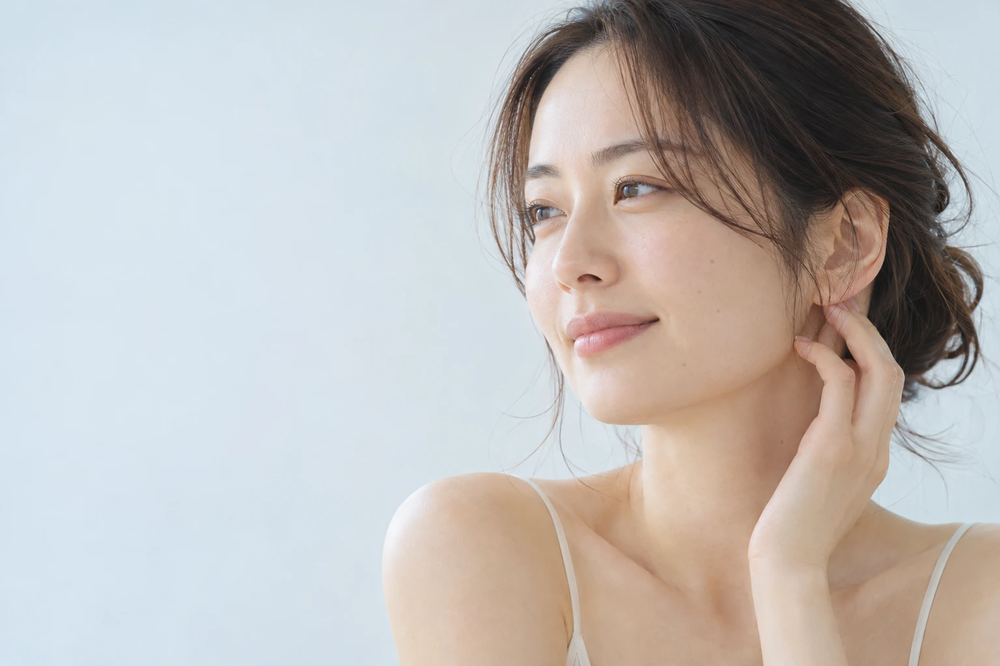
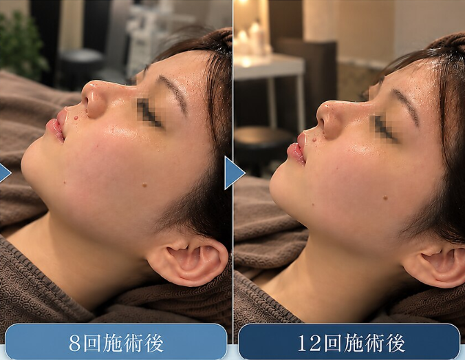
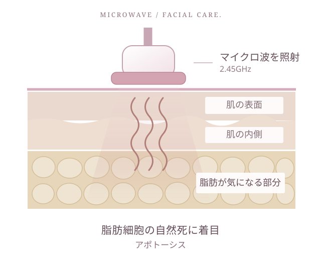
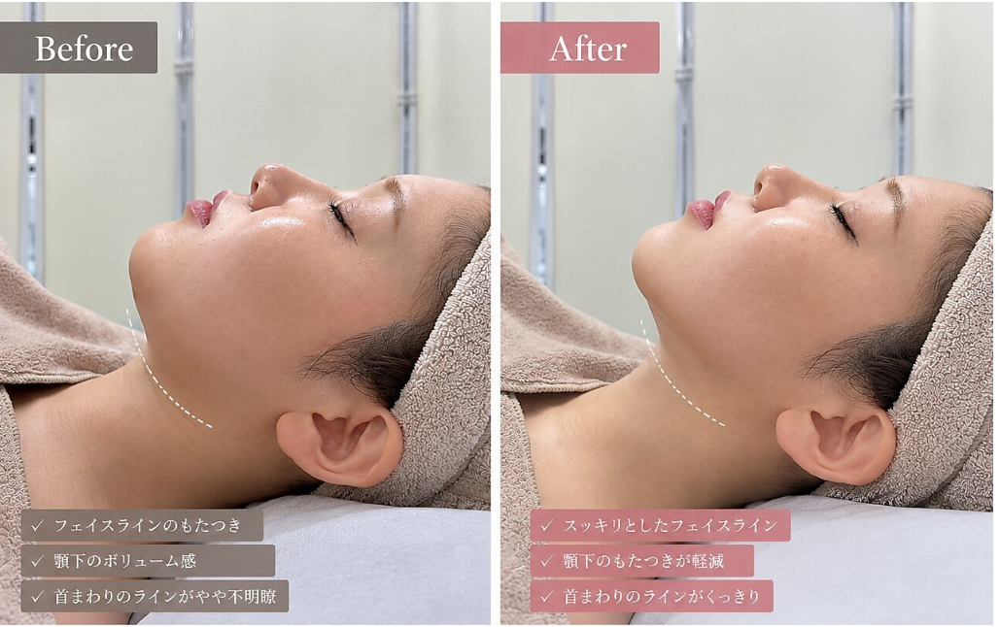
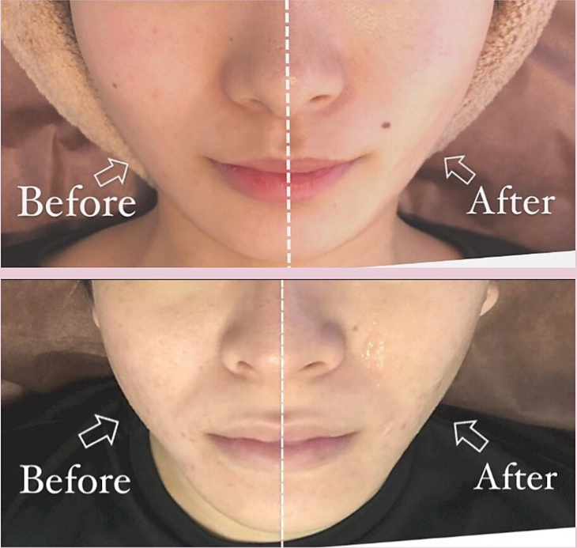

脂肪細胞の自然死に着目。
アポトーシスは、細胞が自ら役割を終える自然な仕組み。脂肪細胞に着目した温熱ケアで、すっきりとした印象を目指します。

イメージMY CONTOUR. MY CONFIDENCE.
頬の厚み・フェイスラインのもたつきに
マイクロリフトMICRO LIFT
毎日に、わたしを好きになる時間を。
韓国で話題のマイクロウェーブで、
すっきりとした印象へ。
¥7,800税込
※施術後の反応・経過には個人差があります。
施術前に注意事項をご案内します。
全国展開
130店舗年間の痩身サポート
10万人お客様満足度
93%※運営会社提供のサロングループ実績。満足度は自社調べ。
REAL CHANGE
頬のケアを重ねた、お客様の経過をご紹介します。
CASE 01
CHEEK CARE
同じお客様の、3回目と6回目の
施術後の比較です。

DOES THIS SOUND FAMILIAR?
そんな小さな気がかりに、
自分のためのケアをはじめませんか。
WHAT IS MICRO LIFT?
気になる頬のボリューム感と、肌の引き締め。
2つを一緒にケアする、マシン施術です。
まずは、ここから。
マイクロリフトは、2.45GHzのマイクロ波を使い、熱エネルギーで気になる部分にアプローチする美容ケアです。
脂肪細胞の自然死（アポトーシス）に着目し、頬の厚みへのケアとハリ・引き締めのサポートを組み合わせます。

アポトーシスは、細胞が自ら役割を終える自然な仕組み。脂肪細胞に着目した温熱ケアで、すっきりとした印象を目指します。
マイクロ波の熱エネルギーで、頬の厚みやフェイスラインのお悩みに向き合います。
ボリューム感だけでなく、肌の引き締めも組み合わせ、すっきりとした印象を目指します。
まずは一度、あなたのお顔に合うケアを。お顔の状態や経過を確認しながら、回数・間隔をご提案します。
BEAUTY CARE, YOUR WAY
クリニックのオンダリフトと比べて、
施術内容・日程・料金を確かめましょう。
クリニックの医療施術と、Liftのエステケアを比較。
| 比較ポイント | CLINIC / ONDA LIFTクリニックの オンダリフト | MICRO LIFTLiftの マイクロリフト |
|---|---|---|
| ダウンタイム | 生じる場合あり赤み・ほてりが出る場合があります。 程度・期間には個人差があります。 | 原則ダウンタイムなし※施術後の反応には個人差があります |
| 日程の 組み方 | ダウンタイムを考慮し、有給・イベントなどの調整が必要な場合あり | お肌の状態とご予定に合わせて。通う間隔をカウンセリングで相談 |
| 脂肪への 考え方 | 医療機器ONDA PROを使用。 | 脂肪細胞の自然死 （アポトーシス）に着目。マイクロ波による温熱ケア |
| 料金 税込 | 27,500円 | 初回体験7,800円両頬 / 75分 |
| こんな方に | 医師に適応を確認し、医療機器による治療を検討したい方 | まずは初回体験で、サロンの小顔ケアを試したい方 |
どちらも施術後の反応には個人差があります。施術後の注意事項を確認し、体調やご予定に合わせてご相談ください。
THE LIFT EXPERIENCE
原則ダウンタイムなしのケアとしてご案内。まとまったお休みを取りにくい方も、まずはご相談ください。
両頬の初回体験は75分。施術後の過ごし方を確認しながら、ご自身の予定に合う日程を相談できます。
アポトーシスという仕組みに着目し、マイクロ波を用いた温熱ケアで、頬のボリューム感と肌の引き締めに向き合います。
はじめての方には、両頬75分・7,800円（税込）の初回体験をご用意。まずはお顔に合うケアを知ることから。
日常に取り入れやすい時間と、初回料金で。
自分らしいフェイスラインケアを。
EVERY ANGLE, YOURSELF
フェイスラインの施術前後を、さまざまな角度から。


BEFORE施術前AFTER施術後※左右で施術前後を比較した提供写真です。効果には個人差があります。
写真を見て気になったら、まずは初回体験へ。
両頬75分・初回7,800円で予約「スタッフの方も丁寧で、リラックスして施術を受けられました。」
YOUR FIRST VISIT
ご来店から、施術後のご案内まで。
お悩み、ご希望、体調やお肌の状態を確認。施術内容と注意事項をご説明します。
施術する部位と料金をご確認いただき、気になるところを一緒に確認します。
お顔の状態に合わせて施術。気になることは、その場でスタッフへお伝えください。
施術後の状態を確認し、ご自宅での過ごし方や今後のケアをご案内します。
ご来店時の状況により前後する場合があります。
BEFORE YOU BOOK
はじめての方の気になること。
ダウンタイムなしの施術としてご案内していますが、刺激の感じ方や施術後の反応には個人差があります。お肌や体調の状態を確認し、施術前に注意点をご説明します。ご心配なことや直後のご予定がある場合は、事前にご相談ください。
はい。顎下やフェイスラインのお悩みもカウンセリングでご相談いただけます。両頬7,800円コースと施術範囲が異なるため、ご希望の部位に合うメニューと料金をご案内します。
推奨する回数・間隔は、お顔の状態や施術部位、ご希望によって異なります。初回のカウンセリングで、無理のないケアの進め方をご相談ください。
変化の見え方や経過には個人差がありますが1回から数回でご実感いただけます。
妊娠中・授乳中の方、治療中の方、体内に医療機器や金属等がある方、ほかの美容施術を受けた方などは、ご予約前にご相談ください。機器の使用条件や体調、お肌の状態により、施術をお受けいただけない場合があります。
ホットペッパービューティーの予約確認画面からお手続きいただくか、店舗へお電話ください。変更可能な期限やキャンセル条件は、ご予約時の案内をご確認ください。
FIND YOUR LIFT
当店でしかできない、自分磨きの時間を。
韓国肌管理Belleと併設のサロンです。
A LITTLE CARE. A NEW CONFIDENCE.
まずは、あなたの頬に合うケアを知ることから。